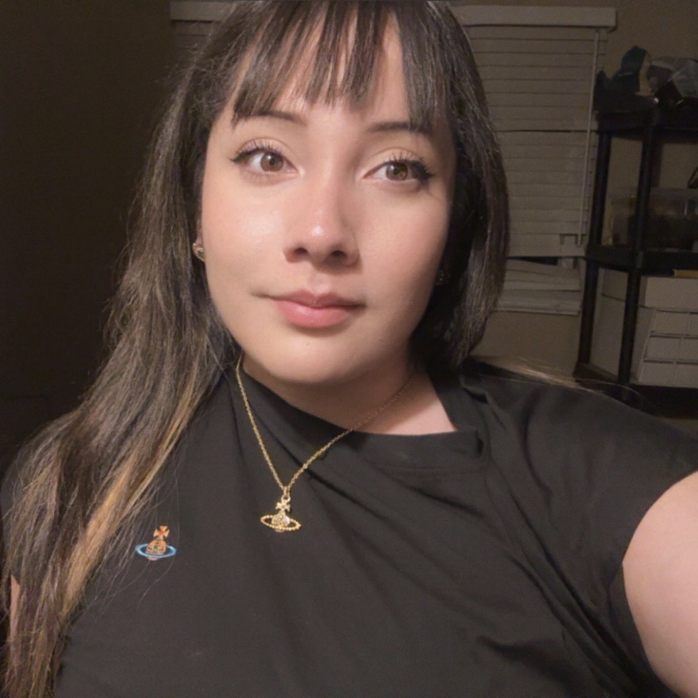

About Me

About Me
My name is Natalia, and I am currently working toward my degree in Software Engineering. I have an Associate degree in Computer Information Systems, and I decided to continue my education because I have always been interested in technology and learning how things work.I am excited to continue developing my skills in programming, web development, and other areas of technology.
I grew up in California and currently live in the Inland Empire. Growing up, I enjoyed spending time with my family and trying different activities and hobbies. I would describe myself as someone who likes to stay busy and enjoys learning new things, especially when I can be creative or work with something hands-on.
Outside of school and work, I have several hobbies that I enjoy. I like cooking and baking, especially when I get to try making something from scratch, and I also enjoy traveling and exploring new places. I am also interested in music, and I have been planning trips to places with a strong music history because my boyfriend really enjoys guitars and music.
One of my goals is to continue growing both personally and professionally while I finish my degree. I would eventually like to have a career in technology where I can use the skills I am learning and hopefully have more flexibility in my work. I am looking forward to this class because I want to become more comfortable with web development and learn skills that I can use in future classes and in my career.
1000 Galvin Road South
Bellevue, NE 68005